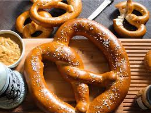

Pretzels

Almost Famous Pretzels
this recipe will have you enjoying mall style pretzels in no time
Ingredients
- 1 ½ cups water (360 mL), warm
- 1 tablespoon salt
- 1 tablespoon sugar
- 1 packet active dry yeast
- 4 ½ cups flour (565 g)
- 3 tablespoons oil, divided
- ⅔ cup baking soda (120 g)
- 2 eggs, beaten
- coarse salt
Steps
- In a bowl, mix water, salt, and sugar until combined. Add yeast, and let rest 5 minutes until yeast starts to foam.
- Add flour and 2 tablespoons of oil, and mix thoroughly until a dough forms.
- Remove the dough and use the remaining oil to cover the bowl.
- Cover bowl with plastic wrap, and leave in a warm place for 1 hour.
- Preheat oven to 450°F (230°C).
- Cut dough into 8 pieces and roll them out into thin ropes, twisting the two ends to form a pretzel shape.
- Add baking soda to a large pot of water, and bring to a rolling boil. Boil each pretzel for 30 seconds per side.
- Transfer pretzels to a baking sheet, brush with egg wash, and sprinkle with salt. Bake for 10-15 minutes, until golden brown.
- Enjoy!